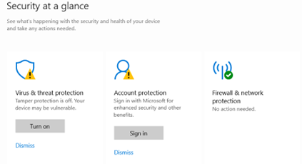
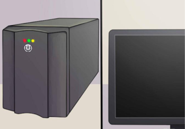
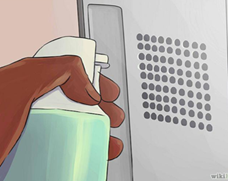
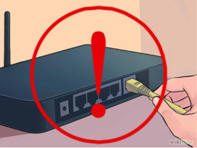

INTRODUCTION
A properly maintained computer gives higher speeds, may it be via RAM or on the Internet, regardless of hardware set-up and configurations. This lesson will give some tips on how to maintain computer systems and networks over time.
A properly maintained computer gives higher speeds, may it be via RAM or on the Internet, regardless of hardware set-up and configurations. This lesson will give some tips on how to maintain computer systems and networks over time.
Use the computer’s Disk Cleanup Utility included in the Windows System. In the same way, you can also download third party, freeware programs such as CCleaner to do the clean-up for you.
Third party softwares like AVG Anti Virus can be used for maintenance. Or use the Windows Security built in on Windows 10 devices.
Delete files that are no longer needed. The freer space a computer has, the faster it will perform. The computer’s performance will increase.
Use the msconfig command in the RUN command prompt to open up a window that will allow you to uncheck startup programs that are no longer used.
Doing this will improve start up and boot down times a lot. Third party softwares such as CCleaner can also be used for this purpose.
For Windows, select Performace and Maintenance. Choose “Rearrance items on your hard disk…” and “Free up space on your hard disk.” Or simply run Disk Cleanup.
Start Menu > Programs > Accessories > System Tools > Scan Disk
Start Menu > Programs > Accessories > System Tools > Disk Defragmenter > Select which disk to Defragment. Click Ok.
Start Menu > Run > In Run, type "MSCONFIG", click Ok. MSCONFIG will appear. Select "Normal Start Up', click Ok. Click Yes to Restart Computer Upon Restart
Start Menu > Settings > Control Panel > Click Display
Select the "Screen Saver" tab.
Change the Screen Saver Drop menu to "None". Click Ok.
It is an electrical apparatus that gives emergency power when a computer’s main power fails. This will help protect the device from electric surges. Phone lines for modems and cat 5 or cat 6 network lines also need surge suppression as they can and will take out your network card or modem in an electric storm.
Dust can accumulate in your computer in less than a year, depending on how dusty your house. Check every few months.
Make sure to follow proper computer assembly and disassembly.
Ports can be easily damaged when mishandled. These repairs can be quite costly.
